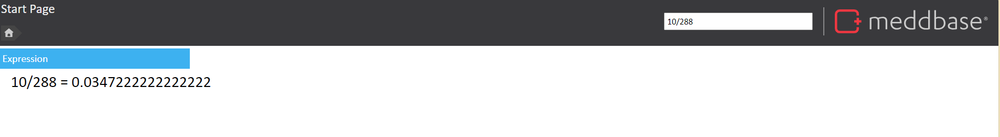

When navigating Meddbase, there are a range of tools available to help with searching for common objects i.e appointments, and patients. Using the search bar will help you quickly locate common objects within Meddbase from any page.
The purpose of this article is to explain how to use the search bar feature to quickly locate common objects within Meddbase.
This article covers the following:
The Search Bar is located on the top right-hand side of any page you navigate within Meddbase. The search bar allows you to search the entire chamber for patients, appointments, invoices and more.
The following objects can be searched for:
It is important to note, that when searching for a person (patient etc) you will need to search surname first.
To use the search bar simply start typing and the results will be automatically displayed based on the characters entered. The results will be automatically refined as you type. Do not press enter after you have entered the search criteria as the results are displayed automatically, clicking enter will clear the screen.
Example 1 Searching for a Date: 19/08/2019 displays multiple entries in our database of both Appointments and Invoices.
Example 2 Searching for a Person: Searching 'He' displays three records, Patient, Medical Staff, & Companies
Once the results have been displayed, simply click on the object and it will take you to the entry.
The Search bar is a dynamic feature and can also be used as a calculator. When searching dates or numbers, if no object is found in the chamber to match, the search bar will instead complete a calculation. This bar can be used in any area of the chamber to conduct quick calculations. To remove the calculation view, either hit Enter on your keyboard or delete the text from the search bar.

Sometimes only a limited amount of information is known for example the first couple of letters of both the surname and forename the search bar will allow for this to be searched on.
For example, to locate James Heck if the surname is entered prior to the forename the search bar will look for this. typing in "he, ja" James Heck appears. The comma must be entered for this to work.